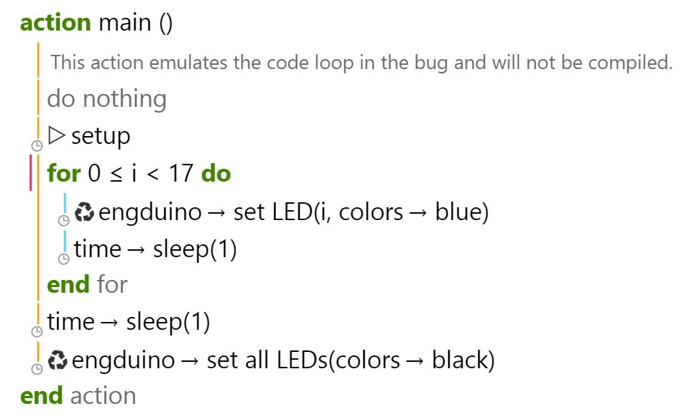
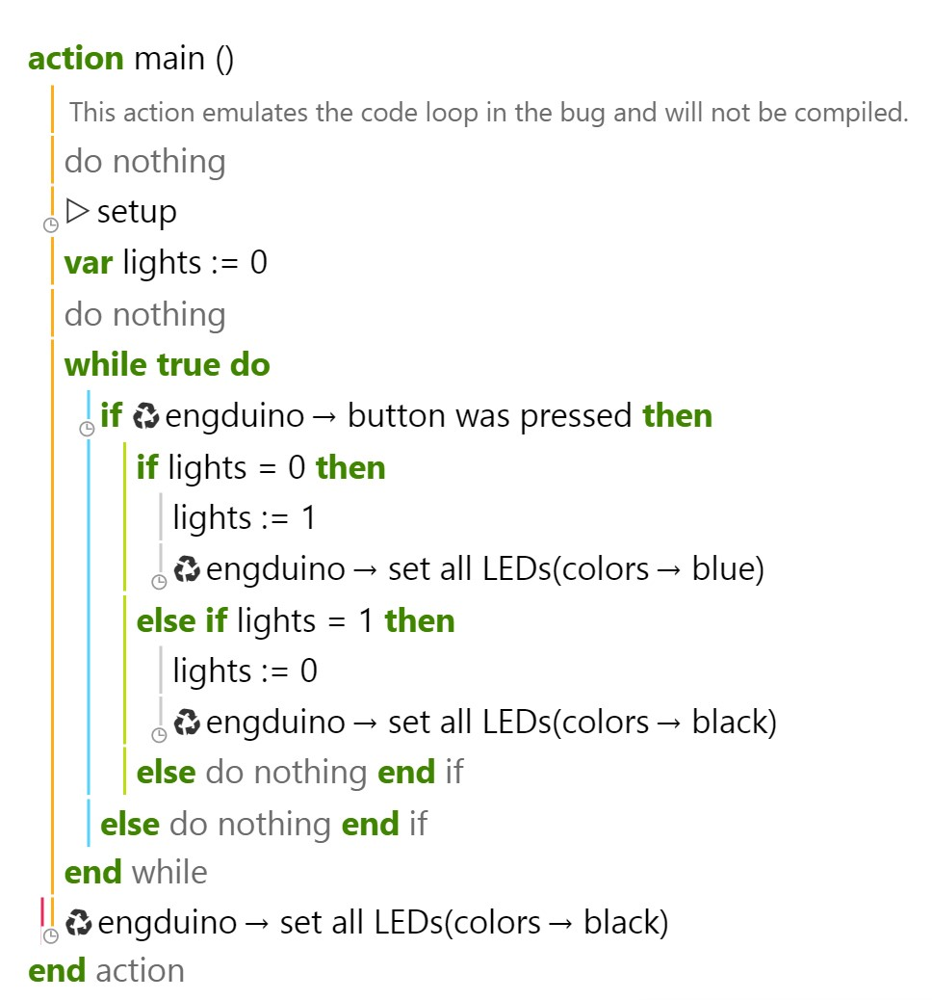

Loops (for and while)
Let's try and implement some of the programming knowledge we learned earlier with the Engduino, specifically For and While loops
For Loop
Let's begin with a For loop - Since each LED on the Engduino has its own unique ID, we can refer to them via each iteration of a For loop. In this example, we'll make each LED light in sequence, with all the lights turning off at the end:
Let's break it down
- We set up a For loop for when i, our For loop's local counter variable, is less than 17, meaning that the loop will execute for each value of i up to and including 16.
- In the body of the For loop, the Engduino will illuminate the LED with the ID of the current value of i, then sleep for a second (so that the lights illuminate at a noticeable pace).
- This process repeats itself until i = 17, at which point all 16 LEDs will be illuminated, and the For loop will end.
- After the for loop ends, all of the LEDs will turn off.
Now try modifying this example, here are some exercises to get you started:
- Make the entire process repeat itself. I.e. when the LEDs all turn off, they will begin lighting again, and so on.
- Turn the Engduino into a two-part minute timer: with ten of the LEDs representing seconds, and the remaining six representing tens of seconds. You'll need to use nested For loops for this one.
While Loop
This example will be a bit different: instead of having each LED turn off (and stay on) in sequence, we will have a perpetual While loop check if the Engduino's button has been pressed, turning the LED's on (or off) if it is pressed:
Let's break it down:
- We initialise a variable to keep track of whether the LEDs are currently on or off.
- We set up a While loop with true set as the argument. What this will do is making the While loop to repeat indefinitely, if/until a statement in the loop body cancels (breaks) it.
- Each time this loop executes, it will check to see if the Engduino's user button has been pressed.
- If it has, it will change our LED variable to 0 if it is currently 1, or to 1 if it is currently 0, and turn the LEDs on or off accordingly.
- The only way to terminate the While loop in this instance would be to turn off the Engduino.
Now try modifying this example, here are some exercises to get you started:
- Have pressing the button change the colour of the LEDs change if they are already turned on
- If you're up for a challenge; integrate the previous exercise into this one and create a program where the For loop in the previous exercise will be terminated if the Engduino button is pressed. I.e. the LEDs will turn on in sequence until the button is pressed. Good luck!